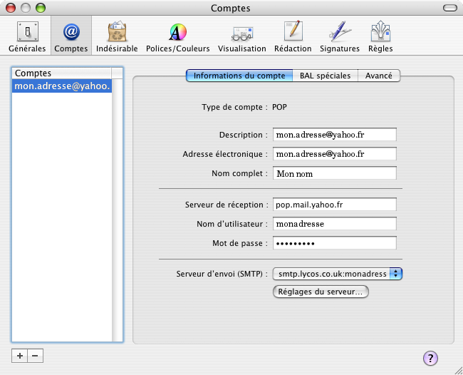
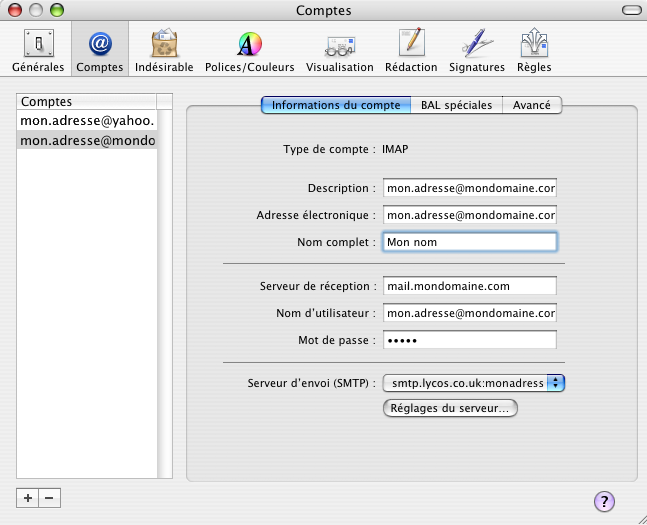
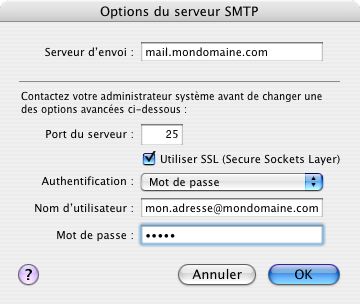
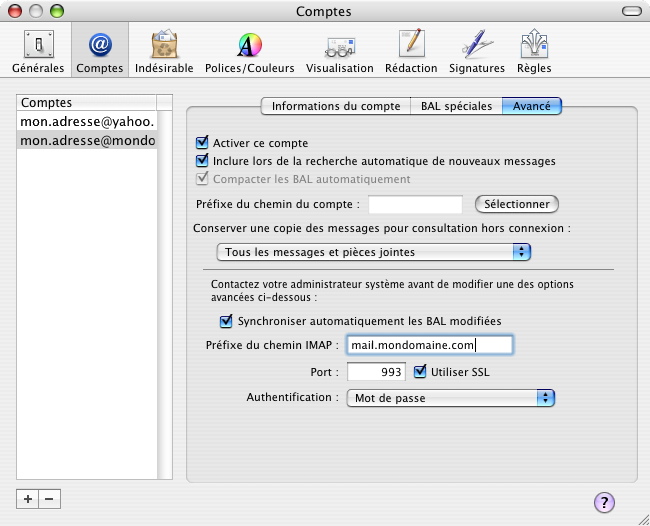
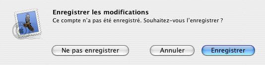

Configuration du client email Mail (Apple).Information de base de notre compte d'exemple :
Adresse email : "mon.adresse@mondomaine.com" Configuration de Mail : Dans le menu, cliquez sur l'onglet "Mail", puis sur "Préférences". Une nouvelle fenêtre apparaît :  En bas à gauche de cette fenêtre, cliquez sur le bouton "+" afin de configurer une nouvelle boîte aux lettres. Une nouvelle fenêtre apparaît :  Le serveur de réception est un serveur du style IMAP, selectionnez donc pour "Type de compte :" la valeur "IMAP" dans le menu déroulant. Il est possible de configurer plusieurs adresses emails afin de relever et d'envoyer des courriers électroniques. Pour rendre l'utilisation plus aisée dans l'arboraissances des répertoires d'emails, il est conseillé d'utiliser le nom de l'adresse email pour chaque répertoires racines des configurations. Le champ "Adresse électronique :" permet de définir quelle adresse on veut configurer, pour notre exemple on mettra donc "mon.adresse@mondomaine.com". Lorsque l'on compose un email, l'adresse d'envoie se fait sous la forme : "Nom <adresse@email>". Le champ "Serveur de réception : permet de définir l'adresse Internet du serveur, dans notre cas il s'agit de "mail.mondomaine.com", que l'on définira comme valeur. Le champ "Nom d'utilisateur :" permet de définir auprès du serveur de réception l'adresse email authorisée à se connecter. Dans notre exemple il s'agit de l'adresse "mon.adresse@mondomaine.com" que l'on définira comme valeur. Le champ "Mot de passe :" est en rapport avec l'adresse email autorisée à se connecter sur le serveur de réception. Dans notre exemple il s'agit de "a1b2c", que l'on définira comme valeur. Le champ "Serveur d'envoi (SMTP) :" permet de configurer la connexion au serveur d'envoi. Sélectionnez "Ajouter un serveur". Une nouvelle fenêtre apparaît :  Le champ "Serveur d'envoi" permet de définir l'adresse Internet du serveur, dans notre cas il s'agit de "mail.mondomaine.com", que l'on définira comme valeur. Afin d'avoir une connexion sécurisée, cochez la case correspondant à "Utiliser SSL (Secure Sockets Layer)". Tout comme le serveur de réception, le serveur d'envoi nécessite la même authentification, basée sur l'adresse email et le mot de passe défini au début de ce document. Pour le champ "Authentification :", faites défiler le menu et sélectionnez "Mot de passe". Pour le champ "Nom d'utilisateur :" définir "mon.adresse@mondomaine.com" comme valeur. Pour le champ "Mot de passe :" mettre le même que pour le serveur de réception, soit "a1b2c". Pour valider l'ensemble, cliquez sur le bouton "OK" situé en bas à droite de cette fenêtre, ce qui permet de revenir à la fenêtre principale de configuration pour le compte email. Sélectionnez l'onglet "Avancé".  Pour avoir l'arborescence à jour, cochez la case correspondant à "Synchroniser automatiquement les BAL modifiées". Le champ "Préfixe du chemin IMAP :" permet de définir l'adresse Internet du serveur de réception, dans notre cas il s'agit de "mail.mondomaine.com", que l'on définira dans comme valeur. Afin d'utiliser une connexion sécurisée, cochez la case correspondant à "Utiliser SSL". Afin d'activer l'athentification définie précédement, pour le champ "Authentification :" sélectionnez "Mot de passe". Fermez la fenêtre de configuration en cliquant sur le bouton rouge situé en haut à gauche de cette fenêtre. Une nouvelle fenêtre apparaît :  Cliquez sur le bouton "Enregistrer". Mail est fin prêt et les connexions seront cryptées. |